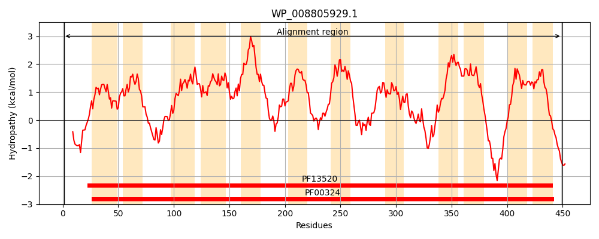
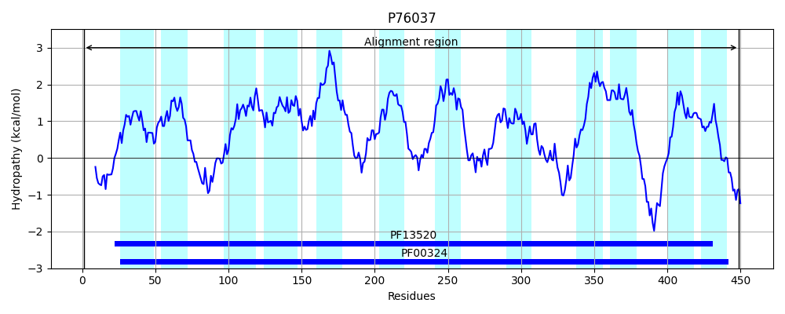
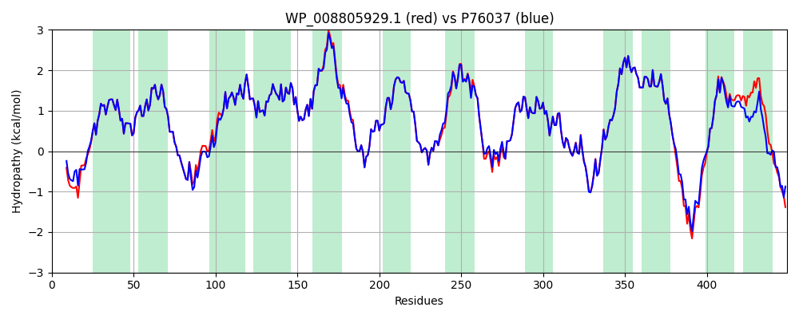

Hit Accession: P76037
Hit TCID: 2.A.3.1.13
Hit Description: gnl|BL_ORD_ID|11432 gnl|TC-DB|P76037|2.A.3.1.13 Putrescine importer - Escherichia coli (strain K12).
Mach Len: 449
e:0.000000
Query TMS Count : 12
Hit TMS Count: 12
TMS-Overlap Score: 12.000000
Predicted Substrates:CHEBI:8650;putrescine
BLAST Alignment:
Score: 2153 , Bit scores: 833 bits, E-value: 0.0e+00, Alignment length: 449, Percentage identity: 93
Query: 1 MAINLPAHNAAQAGRPRLRKSLKLWQVVMMGLAYLTPMTVFDTFGIVSGISNGHVPASYLLALAGVLFTAISYGKLVRQFPEAGSAYTYAQKSISPHVGFMVGWSSLLDYLFLPMINVLLAKIYLSALFPEVPPWVWVVTFVAILTAANLKSVNLVANFNTLFVLVQISIMVVFVILVVQGLHKGEGVGTVWSLQPFISQNAHLIPIITGATIVCFSFLGFDAVTTLSEETPDAARVIPKAIFLTAMYGGIIFIVASFFMQLFFPDIHRFKDPDAALPEIALYVGGKLFQSIFLCTTFVNTLASGLASHASVSRLLYVMGRDNVFPERIFGYVHPKWRTPALNVIMVGIVALSALFFDLVTATALINFGALVAFTFVNLSVFNHFWRRKGYNKTWKDRLHYLLLPMVGALTVGVLWINLEATSLTLGLVWAALGLLYLAYLTRRFRKPP 449
MAIN P + AAQ G+ RLRKSLKLWQVVMMGLAYLTPMTVFDTFGIVSGIS+GHVPASYLLALAGVLFTAISYGKLVRQFPEAGSAYTYAQKSI+PHVGFMVGWSSLLDYLFLPMINVLLAKIYLSALFPEVPPWVWVVTFVAILTAANLKSVNLVANFNTLFVLVQISIMVVF+ LVVQGLHKGEGVGTVWSLQPFIS+NAHLIPIITGATIVCFSFLGFDAVTTLSEETPDAARVIPKAIFLTA+YGG+IFI ASFFMQLFFPDI RFKDPDAALPEIALYVGGKLFQSIFLCTTFVNTLASGLASHASVSRLLYVMGRDNVFPER+FGYVHPKWRTPALNVIMVGIVALSALFFDLVTATALINFGALVAFTFVNLSVFNHFWRRKG NK+WKD HYLL+P+VGALTVGVLW+NLE+TSLTLGLVWA+LG YL YL RR+RK P
Sbjct: 1 MAINSPLNIAAQPGKTRLRKSLKLWQVVMMGLAYLTPMTVFDTFGIVSGISDGHVPASYLLALAGVLFTAISYGKLVRQFPEAGSAYTYAQKSINPHVGFMVGWSSLLDYLFLPMINVLLAKIYLSALFPEVPPWVWVVTFVAILTAANLKSVNLVANFNTLFVLVQISIMVVFIFLVVQGLHKGEGVGTVWSLQPFISENAHLIPIITGATIVCFSFLGFDAVTTLSEETPDAARVIPKAIFLTAVYGGVIFIAASFFMQLFFPDISRFKDPDAALPEIALYVGGKLFQSIFLCTTFVNTLASGLASHASVSRLLYVMGRDNVFPERVFGYVHPKWRTPALNVIMVGIVALSALFFDLVTATALINFGALVAFTFVNLSVFNHFWRRKGMNKSWKDHFHYLLMPLVGALTVGVLWVNLESTSLTLGLVWASLGGAYLWYLIRRYRKVP 449 | Protein Hydropathy Plots: |
|---|
|  |  |
Pairwise Alignment-Hydropathy Plot:
|
|---|
|  |